S pádem poddanství a zrušením pasových omezení v habsburské monarchii po roce 1848, začali mnozí Češi pokukovat po lepším životě za velkou louží. Do roku 1870 tvořili dokonce celých 70 % veškeré emigrace z Rakouska-Uherska.
Pro Evropany byl obrovským lákadlem federální zákon Homestead Act (zákon o usedlostech), který v roce 1862 podepsal prezident Abraham Lincoln. Každý občan Unie nebo žadatel o občanství, starší 21 let nebo hlava rodiny, mohl zdarma (platil se pouze administrativní poplatek 18 dolarů) získat pozemek o rozloze až 160 akrů (zhruba 65 hektarů). Žadatel musel na přidělené půdě žít a obdělávat ji po dobu 5 let.
Česká komunita se usazovala především v severních státech Illinois, Wisconsin, Minnesota, Nebraska, Iowa a v průmyslových městech jako Chicago, New York nebo Cleveland.
Na jihu Češi mířili hlavně do Texasu. Když byl Homestead Act v roce 1862 schválen, v Texasu platit nemohl – a to nejen proto, že byl Texas v té době součástí Konfederace. Hlavní důvod tkvěl v podmínkách, za kterých Texas v roce 1845 do USA vstoupil. Na rozdíl od jiných západních teritorií si ponechal vlastnictví veškeré své veřejné půdy, aby mohl splatit své obrovské dluhy z dob, kdy byl samostatnou republikou. Americká federální vláda v Texasu nevlastnila žádné pozemky, které by mohla podle Lincolnem podepsaného zákona bezplatně rozdávat. Pokud Češi mířili do Texasu za půdou, nevyužívali federální Homestead Act, ale jiné mechanismy. Texas měl svůj vlastní velmi štědrý systém. Už v roce 1839 (jako samostatná republika) přijal zákon, který chránil domovy osadníků před zabavením kvůli dluhům. Později zavedl vlastní Preemption Acts, které fungovaly podobně jako federální zákon – nabízely levnou nebo bezplatnou státní půdu těm, kteří se na ní usadili. Nabízel se také nákup levné půdy od železnic. Stát daroval miliony akrů půdy železničním společnostem, aby stimuloval výstavbu tratí. Železnice pak tuto půdu levně prodávaly imigrantům.
Vzhledem k tomu že Yankeeové se během boje často bezostyšně zbavovali své okolo 25 kg těžké výstroje, vědouce že vyfasují novou, šli často Rebelové do akce s vědomím že si doplní chybějící výbavu nebo třeba děravou přikrývku za novou. Tato schopnost vybavovat se na úkor protivníka, dovolovala do jisté míry operovat konfederačním oddílům na území nepřítele bez jakéhokoliv zvláštního zásobování. Jediným větším problémem byl nedostatek bot. Těch nebylo nikdy dost ani na straně Unie. Na balíček s nějakým tím kouskem civilního oblečení z domova nebo na případnou kořist se ale nedalo vždy spolehnout. Proto například mnoho veteránů bojově velmi vytížené Severovirginské armády opravdu chodilo v poněkud omšelých šatech a vysloužili si tak označení armáda otrhanců.
Předpis ministerstva války hovoří docela přesně, jak má vypadat pokrývka hlavy konfederačního vojáka. Má to být vojenská čepice "képi" s kšiltem, vycházející z francouzského vzoru, s barevným lemováním podle typu vojska. Kromě toho měly být čepice označeny číslem pluku a rozlišeny hodnostním označením pomocí zlatých stužek. Dále se výstrojní předpis zmiňuje o bílé látkové zátylkové roušce - ochraně proti slunci a potahu z nepromokavého voskovaného plátna pro deštivé počasí.
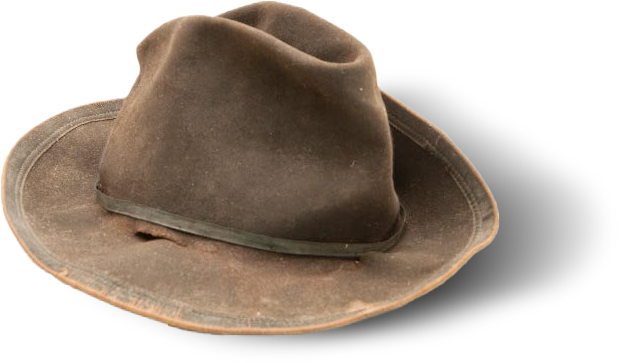
Skutečnost se ovšem v tomto případě od předpisu lišila takřka diametrálně a hlavy Rebelů na bojištích zdobily pokrývky všemožného druhu, tvaru, materiálu i barvy. Velmi běžnými se brzy staly klobouky, zejména na východní frontě. Nejpopulárnější byly kousky s širokou krempou v alpském stylu nebo typ “Excelsior”. Ukázaly se jako velmi praktické a dobře posloužily v horku i dešti. Za zmínku stojí i slamáky, oblíbené zejména u jednotek z Louisiany, Floridy či Jižní Karolíny.
Ačkoliv již zmíněný výstrojní předpis předepisoval jako bojový stejnokroj dvouřadou blůzu s přehnutým límcem ve světle šedém odstínu „le chasseur“, ve skutečnosti se ve vojsku objevila pouze ve velmi omezeném množství. Protože výroba tohoto oděvu a knoflíků byla nákladná, typický voják Konfederace nosil krátký jednořadý „břicháč“ s nízkým stojacím límcem. Pro svou jednoduchost a praktičnost se nakonec tyto “roundabouts” staly standartním stejnokrojem a vojáci Unie často díky němu přezdívali své protivníky “šedivá saka”.
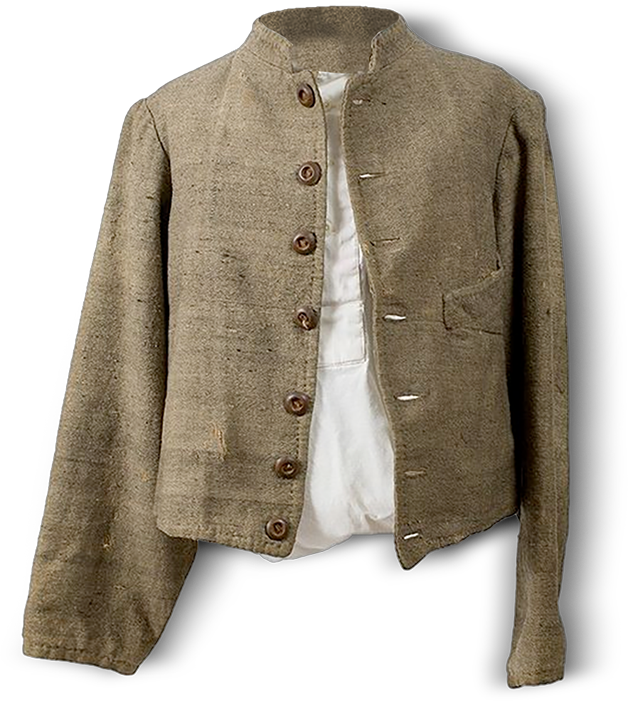
Mnoho z nich byly původně bojové blůzy US Army, na které byly po odbarvení přidány tři knoflíky, aby jich bylo vepředu celkem sedm. Někdy byl přidán stojací límec místo splývajícího originálu.
Spousta variací byla v barevnosti. Od předpisově světlé po velmi tmavou šedou (nejčastěji v armádě Severní Virginie) až po odstíny hnědé. Hnědá barva, které se dosahovalo ořechovým vývarem a zelenou skalicí, se po roce 1864 dokonce vyskytovala častěji než šedá. Podšívka byla obvykle z hladké lesklé bavlny, bílé, hnědé nebo černé barvy.
Kromě saka se nosily oblíbené vesty civilního i vojenského střihu a do chladnějšího počasí pláště.
Další případ fikce výstrojního předpisu stojícího proti realitě. Oficiálně měly být kalhoty stejnokroje blankytně modré, tedy stejné jaké nosili federální vojáci a první vlna konfederačních rekrutů opravdu tyto kalhoty vyfasovala. Nicméně po několika tragických incidentech zaviněných záměnou, kdy vojáci stříleli do vlastních řad, se přistoupilo k výrobě kalhot ve stejných odstínech jaké měly svrchníky, tedy šedé nebo hnědé.
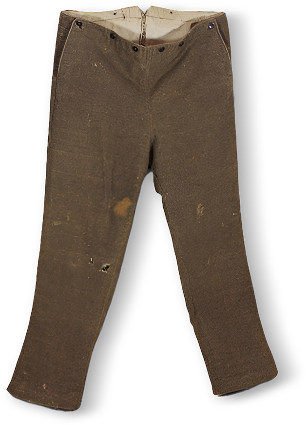
Obvykle měly kalhoty dvě přední kapsy, případně malou kapsu na hodinky. Některé měly klasický poklopec, některé tzv. "padací most" (na obrázku) a stahovaly se pomocí tkaničky v rozparku na zadní straně. Dvojice knoflíků vepředu a vzadu sloužily k uchycení velmi oblíbených šlí. Knoflíky byly kostěné nebo dřevěné, vyjímečně kovové.
Protože, jak už bylo řečeno, konfederační voják si nemohl dovolit svým oblečením plýtvat, nezřídka zdobily kalhoty rebelů záplaty všemožných tvarů a barev. Jeden veterán později vzpomínal: "Byl to zvláštní pohled vidět ty všelijaké výtvory. Na ořechově zbarvených kalhotách jste mohli vidět obrovské červené srdce, modrý čtverec nebo bílou hvězdu podle rozmaru majitele."
V Konfederační armádě měl každý muž fasovat tři košile jednou ročně. Předpisem byla určena jejich barva na bílou či červenou. Překvapivě to byly také nejčastěji se vyskytující barvy. Většinou byly převlékací přes hlavu, bez kapes, s jedním knoflíkem na límci a jedním na každé manžetě. Bavlna byla oblíbenější, lépe se prala a také se v ní tolik nedařilo všelijaké havěťi jako ve vlně.
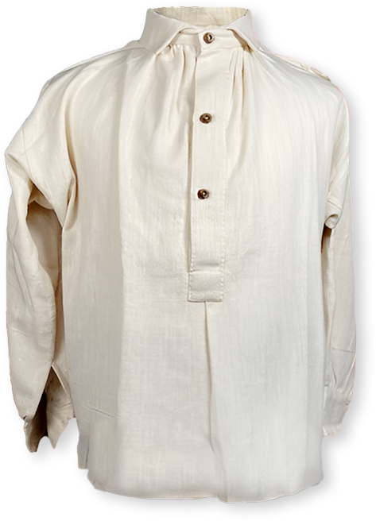
Velmi populární byly také civilní košile přinesené z domova. Na začátku války je někteří rekruti dokonce nosili místo vojenského svrchníku. Byly hlavně z vlněného flanelu a kromě kapes měly zapínání na dřevěné nebo kostěné knoflíky odshora dolů, nebo alespoň do pasu. Většinou byly jednobarevné s barevným lemováním.
Občas bylo možné na bojišti spatřit košile s velkým “bryndákem” s knoflíky po obvodu nebo tzv.“guerrilla shirts”. Ty byly obvykle velmi dlouhé s dvěma kapsami na hrudi a dvěma menšími níže, ve kterých se mohla například nosit munice. Byly ušity z pevného materiálu a v pase se stahovaly páskem. Také měly barevné lemování kolem kapes a někdy se podle lovecké módy nosily přes kalhoty. Na těchto košilích byly k vidění různé výšivky a korálkování. Část košil s nízkým stojacím límcem pocházela ze skladů Britské armády.
Jednou z verzí, kterou historikové uvádějí jako příčinu zlomové bitvy u Gettysburgu byla "pouhá" snaha Roberta Lee zajistit pro své vojáky zásoby kvalitní obuvi. Generál prý vedl armádu hluboko na území nepřítele hlavně proto, že zde byla významná továrna na boty. Jeho pohnutky se dnes nedají zcela ověřit, nicméně to něco napovídá o obrovském problému, jakým v době Americké občanské války bylo obutí a v armádě Konfederace obvzlášť.
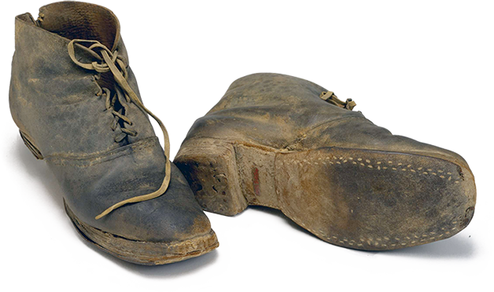
Typ Jefferson (známý také pod názvem Brogan), kterým zpočátku Jih vybavoval své rekruty, byly obyčejné civilní boty. Tedy obuv pro náročné podmínky válečných tažení naprosto nevhodná. Jeffersony se vyráběly v Anglii a poté i na Jihu. Protože byl jako materiál částečně použit tuhý papír, není divu, že stačil jeden delší pochod nebo jedno přebrodění potoka a voják byl bez bot. Přestože se konstrukce obuvi postupně přizpůsobovala potřebám armády, prakticky po celou dobu války narážela výroba na nedostatek kvalitního materiálu, hlavně kůže. Někdy byla nahrazována plátnem, v případě podrážek třeba i dřevem. Dá se říci, že valná část konfederačních armád byla ke konci války prakticky bosá.
S ponožkami to bylo podobné jako s botami. Každý voják měl vyfasovat čtyři páry ponožek ročně a většinou je také dostal. Jenže pro jednoho člověka, který byl většinu času na pochodu, to bylo zatraceně málo. Mnoho jižanů řešilo nedostatek ponožek balením nohou do tzv. onucí, což jsou v podstatě obyčejné pruhy plátna.
Erární pletené ponožky byly obvykle bílé, vyrobené z bavlny nebo vlny. Ty poslané z domova hrály všemi barvami a vždy zaručeně udělaly adresátovi obrovskou radost. Často se do nich zastrkovaly konce nohavic a sloužily vlastně částečně jako kamaše.
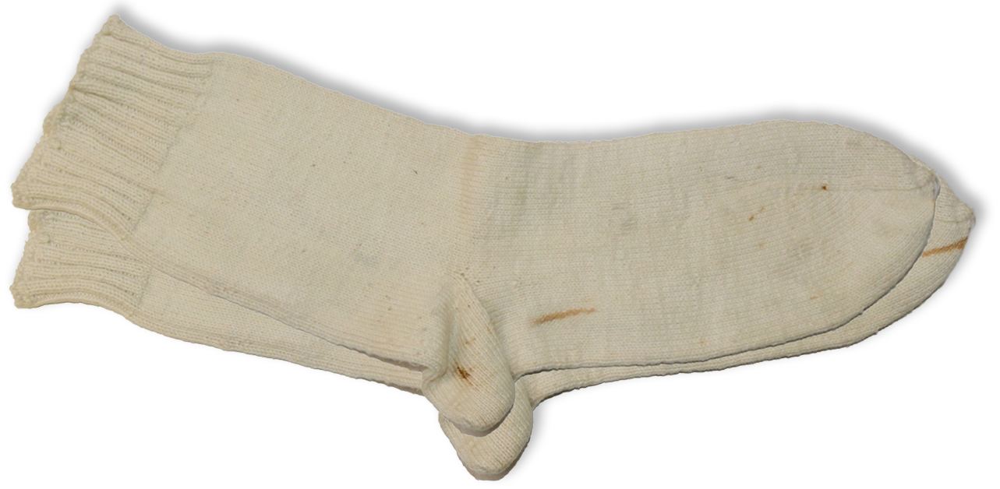
Opasky byly jednoduché, většinou z černé nebo hnědé kůže. Někdy se kvůli nedostatu kůže použila bavlněná látka, sešitá do několika vrstev. Důstojnické opasky byly opatřeny závěsem pro šavli.
Zajímavější je přezka. Výstrojní manuál z roku 1863 popisuje opaskovou přezku jako mosazný ovál, 3,5 palce dlouhý a 2,25 palce vysoký, s vystouplými písmeny CS, tedy obdobu přezky, kterou používali vojáci Unie. Tato předpisová součástka ovšem byla velkou vzácností, protože po roce 1862 už zřejmě nebyla vůbec vyráběna. Tento typ měl několik variací, například s hvězdami po obvodu nebo s písmeny CSA. Někteří konfederační vojáci nosili federální přezky, protože těch bylo na bojištích naopak přebytek. V tomto případě byla písmena US upilována nebo voják přezku otočil vzhůru nohama. O něco častěji se používala obdélníková mosazná přezka s písmeny CSA opět v několika variantách. Například s vavřínovým věncem okolo písmen. Jednoduché obdélníkové přezky se zprvu vyráběly v Atlanta Arsenal, která zásobovala Tennesseeskou armádu ale nosila je i část Severovirginské armády.
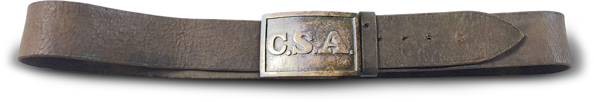
Nejpoužívanější zřejmě byly obyčejné spony civilního vzhledu. Nosila je asi polovina prostých vojáků. Většinou byly opět z mosazi nebo železné. Často je dodávali malí výrobci, hlavně z Georgie, a množství jejich variant bylo pochopitelně značné. Obecně se dá říci, že obyčejné spony byly více používány v Severovirginské armádě, zatímco v armádách na západě se více nosily masivní lité přezky.
Typické důstojnické a kavaleristické dvoudílné spony byly kopiemi federálního vzoru. Na středové části měly opět písmena CS uvnitř vavřínového věnce. Za zmínku ještě stojí v Anglii vyráběná obdélníková přezka, dodávaná pro Severovirginskou armádu, s vyobrazenou bojovou zástavou uvnitř vavřínového věnce. Stejně jako všechny jižanské výstrojní součástky vyrobené z mosazi, se i přezky vyznačovaly načervenalým odstínem kvůli vysokému obsahu mědi ve slitině.
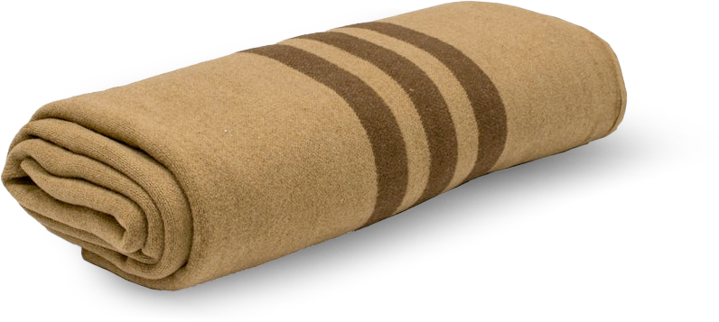
Nepřehlédnutelná a nenahraditelná součást vybavení. Věrná přítelkyně za studených nocí. Přikrývka byla vyrobena z vlny a pěšáci ji fasovali v béžové barvě s hnědým pruhem u kraje (dělostřelci měli červené a kavalerie tmavě modré). Vyjímkou ale nebyly přikrývky přinesené z domova a tedy zcela jiných barev. Zarolovaná přikrývka, obsahující veškeré náhradní oblečení a potřeby pro táboření v poli, přehozená přes levé rameno a na koncích svázaná pod pravou rukou jako bandalír (kvůli volné pravé ruce při střelbě) často nahrazovala tornu.
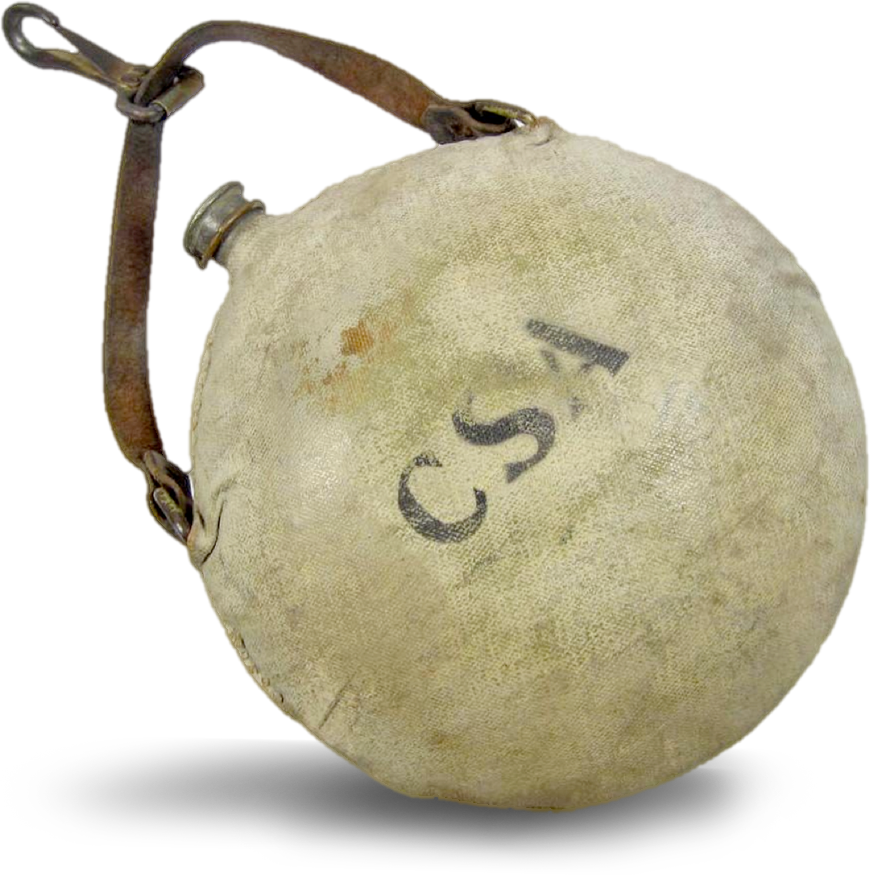
Používalo se jich mnoho typů. Od dřevěných exemplářů, pamatujících ještě válku za nezávislost přes celokovové bubnové až po čočkové tzv. "Bullseye". Dřevěné čutory se vyráběly v kombinaci borovicového a dubového či jasanového dřeva. Byly ale objemné a těžké, takže oblíbenějšími se brzy staly láhve cínové. Průměr kulatých čutor byl asi 20 cm a vešlo se do ní kolem 2 litrů tekutiny. Ke konci války nedostatek kovu došel tak daleko, že konfederační vojáci fasovali keramické nádobí a láhve klasického civilního tvaru.
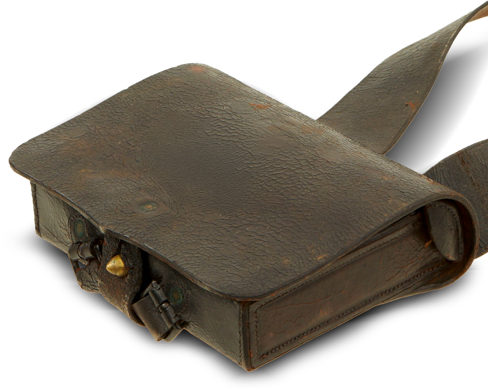
Nábojové brašny vyráběné na Jihu byly převážně kopiemi těch federálních. Byly vyrobeny z černé nebo hnědé kůže a uzpůsobeny buď pro nošení na ramenním řemenu, na opasku anebo s možností obého. Uvnitř se nacházelo buď jedno nebo dvě cínová pouzdra na náboje (1 × 40 nebo 2 × 20 kousků) a oddělená kapsa pro nástroje a čištění zbraně. Kvůli snadné manipulaci bylo zavírání vyřešeno jednoduchým pinem z mosazi, později cínu nebo tvrdého dřeva. V omezeném počtu se vyskytovaly cartridge boxy v vyraženým CS na klopě. Velké množství nábojových brašen bylo Konfederaci dodáno z Anglie jako příslušenství pušek Enfield.
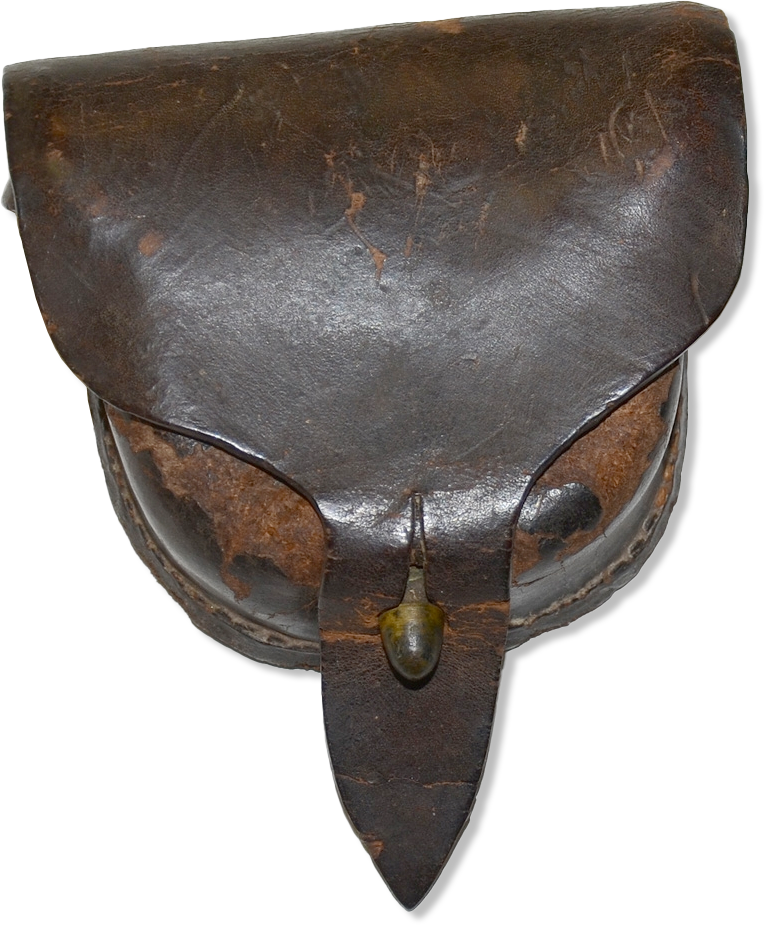
Pouzdro na perkusní zápalky se vyrábělo z černé nebo hnědé kůže. Používalo se mnoho typů, lišících se tvarem i zpracováním. Některé měly podšívku z jemné ovčí vlny nebo druhou vniřní klopu, oddělenou od vnější. Zavírání bylo obdobné jako u cartridge boxu pomocí kovového nebo dřevěného pinu a dírky v řemínku na přední klopě. Sumka měla vzadu jedno široké nebo dvě užší oka k připevnění na opasek. Jednotlivé kožené díly byly sešité, případně v rozích snýtované mosaznými nýtky. Některé kousky měly na přední klopě vyraženy informace o výrobci nebo pouze písmena CS. Mnoho konfederačních vojáků nosilo dovážený cap box, používaný v Britské armádě a někteří tuto součást výstroje vůbec nepoužívali a zápalky raději nosili po kapsách.
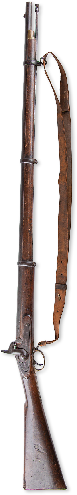
Hlavní zbraní pěšáka v Americké občanské válce byla předem nabíjená puška, nebo odborněji řečeno pušková mušketa s drážkovanou hlavní. Klasické nedrážkované muškety se vyskytovaly už jen minimálně a hlavně na začátku konfliktu. Protože Jih měl velmi omezenou zbrojní výrobu, spoléhal se hlavně na dovoz. Konfederačnímu vojákovi se tak do ruky nejpravděpodobněji dostala britská puška Enfield Pattern 1853. Konfederace jich z Británie dovezla stovky tisíc kusů. Další rozšířenou zbraní byl na Severu vyráběný typ Springfield, či jeho kopie, vyráběná v Richmondu. Používalo se ale i mnoho jiných typů, často od malých výrobců. Například Fayetteville ze Severní Karolíny či Cook & Brother z New Orleansu.
Enfield Rifle Pattern 1853 byla poprvé zavedena do výzbroje Britské armády v roce 1853 a používána jako hlavní pěchotní puška až do roku 1867. Poprvé byla použita v Krymské válce (1854-56), kde prokázala své kvality. Měla ráži .577 palce (tedy přibližně 14,66 mm) a používala nový typ kuželovitých střel Minié, se kterým dosahovala vysoké přesnosti a dlouhého dostřelu. Měla několik modifikací z nichž za zmínku stojí hlavně zkrácená dvouobjímková (2band) verze, typicky pro kavalerii nebo námořní pěchotu, nebo ostřelovačská verze s puškohledem.
Proces nabíjení a střelby si zaslouží samostatnou kapitolu takže více v PRINCIP PERKUSU.
Voják musel o svou zbraň pravidelně pečovat, aby zajistil její spolehlivou funkčnost. Zbytky černého prachu, pokud se jich včas nezbavíte, dokážou připravit mnohá nepříjemná překvapení. Vojáci byli cvičeni, jak zbraň rozebrat, vyčistit a znovu složit. Tato dovednost byla považována za stejně důležitou jako samotná střelba. Důstojníci a poddůstojníci pravidelně kontrolovali stav zbraní – zejména před bojem nebo přehlídkou. Špinavá nebo zanedbaná zbraň zpravidla znamenala trest. Kdo měl kdy co do činění s armádou nebo třeba reenactingem, dokáže si představit jak je tato činnost "oblíbená".
K pušce zpravidla patřil bodák pro boj blízka. Puškových bajonetů bylo několik druhů. Ten dodávaný k Enfieldu měl 17 palců (cca 43 cm) dlouhou čepel z kalené oceli a trojúhelníkový profil. Nosil se v kožené pochvě s mosaznou špicí a krčkem. Mosazný háček spolu se zářezem v kůži a koženým řemínkem zajišťoval bajonet proti vyklouznutí z pochvy. Také se používaly tzv. šavlové bajotety. Tyto hrozivé zbraně měly čepele dlouhé něco přes půl metru a pětipalcovou mosaznou odlitou rukojeť. Protože šavlové bajotety byly opravdu velké a neprakticky těžké, bylo od jejich výroby a používání během války upuštěno.
Navzdory romantickým představám je nutno podotknout, že s používáním bajonetů v boji muže proti muži to nebylo tak slavné. S jejich použitím se počítalo především proti útoku jezdectva. Jak ale vzpomíná jeden veterán z Richmondu: